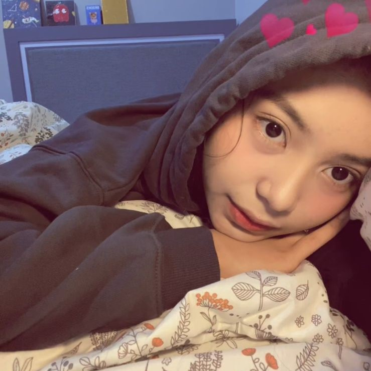

|  |
Saya Intan Nuril Aini Kamilah, lulusan SMA Darul Ulum 2. Saya memiliki kemampuan komunikasi yang baik, mampu bekerja dalam tim, dan memiliki semangat belajar yang tinggi. Pengalaman saya di dunia organisasi telah membentuk saya menjadi pribadi yang bertanggung jawab dan berorientasi pada solusi. Selain itu, saya aktif dalam kegiatan pemrograman dan memiliki ketertarikan dalam bidang seni, khususnya melukis. |